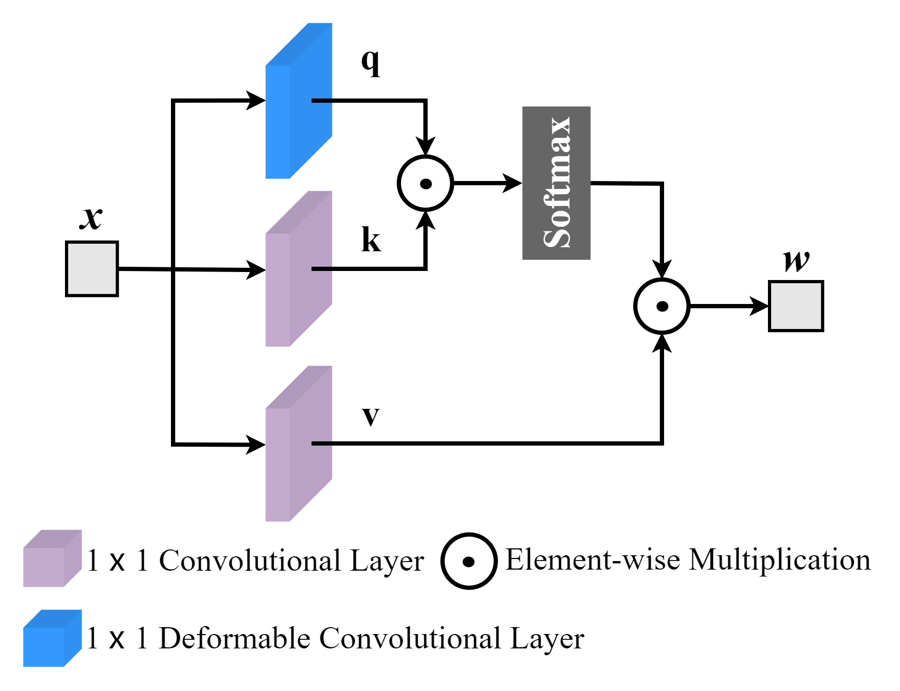
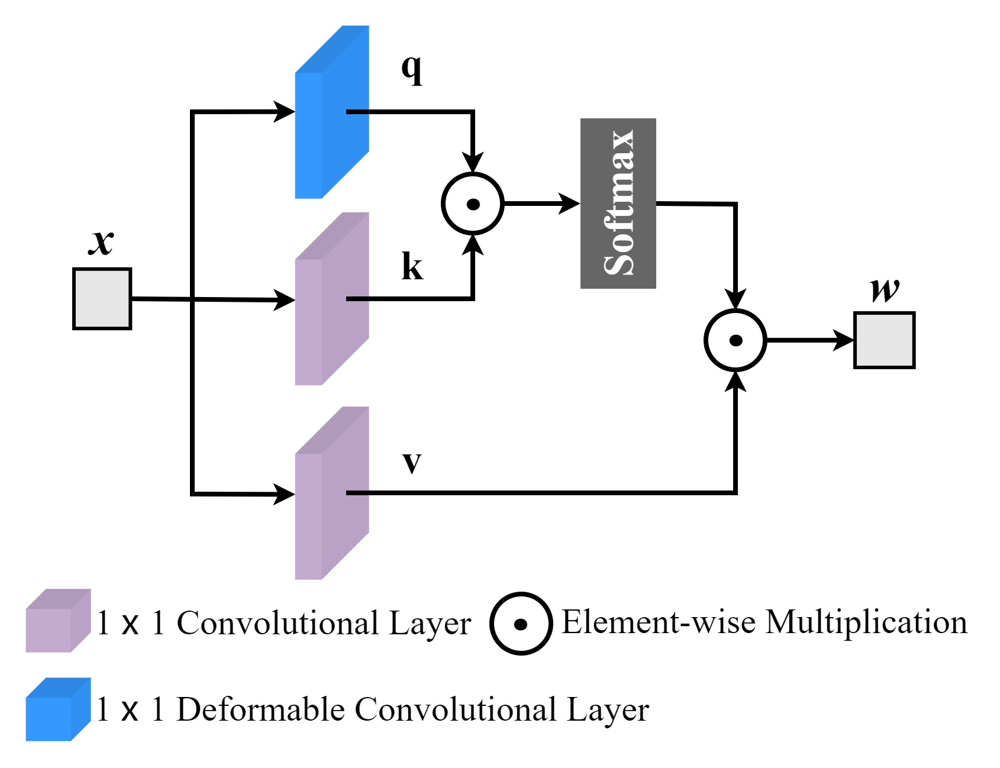

Adaptive Selection of Local and Non-local Attention Mechanisms for Speech Enhancement
Local and non-local attention-based methods have been well studied in various speech enhancement tasks while leading to promising performance. However, natural auditory scenes are essentially dynamic and contain many fast-changing, focusing on one type of attention mechanism (local or non-local) is unable to precisely capture more discriminative information for estimating target speech. To address this issue, we introduce an adaptive selection network to dynamically select an appropriate route that determines whether to use the attention mechanisms and which attention mechanism to use for speech enhancement. We train the adaptive selection network using reinforcement learning with a developed difficulty-regulated reward that is related to the performance, complexity, and difficulty of predicting a target speech from the noisy mixtures. Consequently, we propose an Attention Selection Speech Enhancement Network, dubbed ASSENet, which is composed of an adaptive selection network and a local and non-local attention based speech enhancement network. The ASSENet incorporates both local and non-local attention and develops the attention mechanism selection technique to explore the appropriate route of local and non-local attention mechanisms for speech enhancement tasks. The results show that our method achieves comparable and superior performance on both STOI and PESQ scores for the VoiceBank-DEMAND dataset and real-world settings.
 


The demo of ASSENet
Task and dataset- We evaluated the proposed ASSENet on Single-channel Speech Enhancement task.
- For evaluation on simulated data: we use VoiceBank-DEMAND dataset to train the ASSENet. We randomly select 12 male speakers and 12 female speakers from totally 84 speakers (42 male and 42 female), and each speaker pronounced around 400 sentences. Finally, the clean data contained 9600 utterances in total (4800 male utterances and 4800 female utterances). Next, we mix 9600 utterances with noise in -5, -4, -3, -2, -1, 0, 5 dB SNR levels.
- For evaluation on real-world data: we use AVSpeech + AudioSet to train the ASSENet. The clean speech dataset AVSpeech is collected from YouTube, containing 4700 hours of video segments with approximately 150,000 distinct speakers spanning a wide variety of people and languages. The noisy speech is a mixture of the above clean speech segments with AudioSet that contains a total more than 1.7 million 10-second segments of 526 kinds of noise.
Demos on Simulated data
- Mixture is the noisy speech sample.
- ASSENet-w\o ASN is the enhanced speech sample, which processed by ASSENet without adaptive selection network.
- ASSENet is the enhanced speech sample, which processed by ASSENet.
- Clean is the clean speech sample.
Speech enhancement samples.
| Mixture | ASSENet-w\o ASN | ASSENet | Clean | |
|---|---|---|---|---|
| Sample 1 | ||||
| Sample 2 | ||||
| Sample 3 | ||||
| Sample 4 | ||||
| Sample 5 | ||||
| Sample 6 | ||||
| Sample 7 | ||||
| Sample 8 | ||||
| Sample 9 | ||||
| Sample 10 |
Demos on Real-world data
| Original | ASSENet Enhanced | |
|---|---|---|
| Sample 1 (Babble) | ||
| Sample 2 (Cafeteria) | ||
| Sample 3 (Public Street) |
NOTE:
- "Adaptive Selection of Local and Non-local Attention Mechanisms for Speech Enhancement", submitted to NeurIPS 2022
- The code will be released in the near future